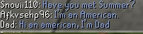

<div id="content">
<div id="article">
<div class="sectionHeader">
<div class="left">
<div class="right">
<h1 class="plaque">
22-Feb-2021
</h1>
</div>
</div>
</div>
<div class="section">
<div class="brown_background">
</div>
<div id="contrast_panel">
<div id="infopane">
<div class="title thrd">A New Layer Of Bots</div>
<div class="about">
</div>
</div>
<div class="phold" id="nocontrols"></div>
<div class="actions" id="top">
<table>
<tr>
<td class="commands center">
<ul class="flat first-child">
<li><a href="./archives.html"> Back to Update List</a></li>
<li>
<a href="/"> Refresh</a>
</li>
</ul>
</td>
</tr>
<tr>
</tr>
</table>
</div>
<div class="" id="contentmsg">
<a class="msgplace" name="0"></a>
<table cellspacing="0" class="message jmod">
<tr>
<td class="leftpanel J-Mod">
<div class="msgcreator uname">
 
    Summer
    </div>

<div class="modtype">Website Developer</div>
<div class="msgcommands">
<br/>
</div>
</td>
<td class="rightpanel">
<div class="msgtime">
22-Feb-2021 00:00:00
<br/>
</div>
<div class="msgcontents">
<!-- Post goes right in here -->
<p>What's a remake without focus on unique features that build the game?</p>
<p>
  The battle of the worlds! </p>
<p> A new whole world was added with the whole new highscores to match it! 
      World 2 being the custom/QoL verison of 2009scape and World 1 becoming the authentic 2009scape.
  </p>

  World 2 now adding Skill Cape Perks which you can find here : <a href="../../../site/game_guide/skill_cape_perks.html"> Click here</a>
  World 2 also adding unlimited rerolls
  
  For both worlds we are looking at the xp drops updates! You can toggle it by doing the command : ::xptoggle
  <br/>
<br/>
<div style="text-align: center">
<video controls="" width="100%">
<source src="../videos/totalxpdrops.mp4" type="video/mp4">
</source></video>
</div>
<br/>
<p> You can also change it from the total xp to the most recent skill by doing ::xpconfig track recent increment</p>
<div style="text-align: center">
<video controls="" width="100%">
<source src="../videos/xpconfig.mp4" type="video/mp4">
</source></video>
</div>
<br/>
<p> And Slayer Toggles! Just type in ::toggleslayer while you have an active task and watch your counter go crazy!</p>

<hr/>
<br/>
<br/>

But that's not all..


<ul>
<li> New Content </li>
<li>
        x20 xp rate
        Implemented a new xp rate to tempt the world 2 players with. The xp rate will have it's own set of claims to the 99s.
        Make sure like every other rate once you are first in a 99 to post in #claim-to-fame in the discord.
      </li>
<li>
        Bot Chat now shows up in the chat box! With a bunch of new phrases being added all the time by our beloved Kermit!
        <br/>

</li>
<li>Agmundi Quality Clothes shop added.</li>
<li>Aberab, Achietties, Afflicted,Afrah,Agility Boss,Agmundi dialogues added.</li>
<li>Added all the NPCs for the varrock museum basement area</li>
<li>Added dialogue to Teacher and Pupil (male) NPC variant/li&gt;
      </li><li>Added dialogue to Natural Historian NPC (not complete, requires cutscenes)</li>
<li>Added Ghost NPCs to "The Golem" quest area and 'Strange Implement' ground item</li>
<li>Added stairs support for Varrock Museum for underground area</li>
<li>Added dialogue to one 'Schoolgirl' NPC in varrock museum area</li>
<li>Added Altar Tabs</li>
<li>Restructured the project</li>
<li>Alphabetized the ::quests in Discord</li>
<li>Alphabetized the ::quests list ingame</li>
</ul>
<br/>
<p>
<b><u>Bug Fixes:</u></b>
</p><ul>
<li>Added a check for Leaf-bladed sword</li>
<li>Fixed cooking bug where fire goes out and the player can still cook.</li>
<li>Mystic fix and added slayer drops + bonuses</li>
<li>Renamed the game instructor</li>
<li>Reduced the spam that bots would produce</li>
<li>Fixed Jelly Droptable</li>
<li>Removed a bunch of offensive names from bots and bot's text.</li>
<li>Kalphite soldiers now have animations and a drop table matching 2009</li>
<li>Adjusted the stat bonuses for the Kalphite Worker, Soldier and Guardian to match stat bonuses from OSRS wiki articles since they have accurate stats for the time prior.</li>
<li>Fixes immerseFalador's CoalMiner which starts in the mine and gets stuck.</li>
<li>Possible to thieve coins (and other items) even if players have 28 items in inventory, given they have space.</li>
<li>The giant spiders in Lumbridge are no longer aggressive</li>
<li>NPCs now don't attempt to face/focus you while dying</li>
<li>Fixed clue scroll text to make it more authentic</li>
<li>Pickpocketting has a slower delay</li>
</ul>
<br class="clear"/>
<br/>

The site has also had some updates this month. We're working on a brand two brand new world highscore pages! Be sure to check it out and share any suggestions you have in the <a href="https://discord.gg/43YPGND">Discord</a>.
<br/>
<br/>

See the World 1 Highscores here: <a href="../../m=hiscore/hiscores.html">here!</a> <br/>
See the World 2 Highscores here: <a href="../../m=hiscore/hiscores.html?world=2">here!</a>
<br class="clear"/>
</div>
</td>
</tr></table>
</div>
<div class="actions" id="bottom">
<table>
<tr>
<td class="commands center">
<ul class="flat first-child">
<li><a href="./archives.html"> Back to Update List Achive</a></li>
<li>
<a href="/"> Refresh</a>
</li>
</ul>
</td>
</tr>
<tr>
</tr>
</table>
</div>
</div>
</div>
</div>
</div>